1. Giriş
ATSİS (Arıza Takip Sistemi), okullardaki cihaz arızalarının bildirilmesini ve takibini kolaylaştıran, bildirimden çözüme kadar tüm süreci dijitalleştiren, modern ve kullanıcı dostu bir web uygulamasıdır. Eğitim kurumlarının teknolojik altyapısında meydana gelen sorunların hızlı ve etkili bir şekilde çözülmesini sağlamak amacıyla tasarlanmıştır.
Sisteme erişmek için web tarayıcınızdan https://atsis.husniyeozdilek.k12.tr/ adresini ziyaret edebilirsiniz.
Teşekkür ve Takdir
Bu sistem, Hüsniye Özdilek Ticaret M.T.A.L. Bilişim Alanı öğretmenlerinin özverili çalışmaları ve teknik becerileri sayesinde geliştirilmiştir. Teknik altyapının kurulması, kodlama süreçleri ve kullanıcı deneyiminin optimizasyonu konularında gösterdikleri üstün gayret ve profesyonel yaklaşım, ATSİS'in eğitim kurumlarına değer katan bir çözüm olmasını sağlamıştır. Bilişim teknolojilerinin eğitim süreçlerine entegrasyonu konusunda gösterdikleri bu başarılı çalışma örneği için kendilerine teşekkür ederiz.
Uygulama, teknik servis süreçlerini optimize ederek zaman ve kaynak tasarrufu sağlar. Bu sistem sayesinde, arıza bildirimleri standartlaştırılmış, bildirim süreci kolaylaştırılmış ve takip süreci şeffaflaştırılmıştır. ATSİS, özellikle akıllı tahta, bilgisayar, yazıcı ve projektör gibi eğitimde sıklıkla kullanılan cihazların arızalarının raporlanması, atanması, durumunun izlenmesi ve çözüm sürecinin belgelenmesi için geliştirilmiş kapsamlı bir çözümdür.
ATSİS'in temel özellikleri arasında:
- Kolay arıza bildirimi: Öğretmenler, minimum adımla hızlıca arıza bildirebilir
- Gerçek zamanlı bildirimler: Yeni arıza bildirimleri ve durum güncellemeleri anında ilgili kişilere iletilir
- Detaylı raporlama: Arıza türleri, lokasyonlar ve çözüm süreleri hakkında kapsamlı istatistikler sunulur
- İstatistiksel analiz: En sık arızalanan cihazlar, ortalama çözüm süreleri ve diğer önemli göstergeler hakkında veriler sunar
- Duyarlı tasarım: Tüm cihazlarda (masaüstü, tablet, telefon) sorunsuz çalışır
- Otomatik giriş: Güvenli cihazlarda kullanıcıların tekrar kimlik doğrulaması yapmadan sisteme erişimini sağlar
Sistem iki ana kullanıcı tipi için tasarlanmıştır:
- Öğretmen: Arıza bildirimi oluşturur ve kendi oluşturduğu arıza kayıtlarını takip eder.
- Yönetici: Tüm arıza kayıtlarını görüntüler, düzenler, atar ve yönetir. Kullanıcı yönetimi yapar ve sistem ayarlarını değiştirebilir.
Bu kılavuz, her iki kullanıcı tipi için sistemin nasıl kullanılacağını adım adım açıklamaktadır.
1.a. Otomatik Giriş Sistemi
Yeni Özellik: Akıllı Giriş Sistemi
ATSİS artık daha akıllı bir giriş sistemine sahip. Sisteme giriş yapmanız durumunda:
- Tarayıcınızda oturum bilgileriniz güvenli bir şekilde saklanır.
- Aynı cihazdan yeniden erişim sağladığınızda, sistem cihazınızdaki bilgileri kontrol eder.
- Daha önce yönetici olarak giriş yapmışsanız, doğrudan yönetici paneline yönlendirilirsiniz.
- Daha önce öğretmen olarak giriş yapmışsanız, doğrudan öğretmen paneline yönlendirilirsiniz.
- Giriş ekranını görmeden, doğrudan ilgili arayüzü kullanmaya başlayabilirsiniz.
Bu sayede her seferinde kullanıcı adı ve şifrenizi girmenize gerek kalmaz. Güvenliğiniz için, belirli bir süre kullanmadığınızda sistem otomatik olarak çıkış yapar.
Not: Farklı bir hesap ile giriş yapmak isterseniz, önce sağ üst köşedeki profil menüsünden "Çıkış Yap" seçeneğini kullanmalısınız.
2. Öğretmen Paneli Kullanımı
2.a. Giriş Yapma
- Web tarayıcınızı açın ve ATSİS web adresine gidin.
- Daha önce öğretmen hesabıyla giriş yapmışsanız, sistem sizi otomatik olarak tanıyacak ve doğrudan öğretmen paneline yönlendirecektir.
- İlk kez giriş yapıyorsanız veya hesap değiştirmek istiyorsanız, "Öğretmen Girişi" butonuna tıklayın.
- Adınızı ve yöneticiden aldığınız erişim kodunu girin.
- "Giriş Yap" butonuna tıklayın.
- "Bu cihazda beni hatırla" seçeneğini işaretleyerek bir sonraki ziyaretinizde otomatik olarak giriş yapabilirsiniz.
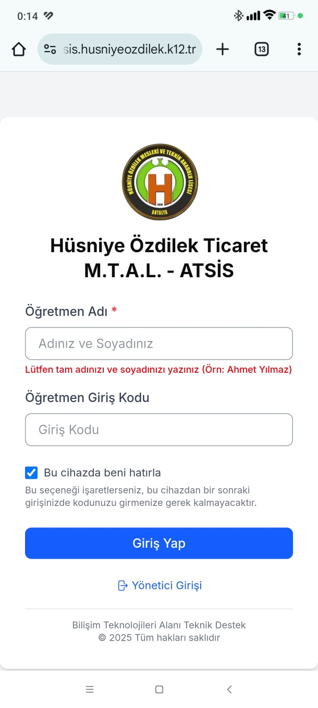
Yönetici Paneline Geçiş: Öğretmen panelinde sağ üst köşede yer alan profil menüsünden "Yönetici Paneline Geç" seçeneğine tıklayarak (gerekli yönetici yetkileriniz varsa) yönetici arayüzüne geçiş yapabilirsiniz.
2.b. Arıza Bildirimi Oluşturma
- Giriş yaptıktan sonra "Arıza Bildir" butonuna tıklayın.
- Açılan formda arıza ile ilgili bilgileri doldurun:
- Cihaz türü
- Cihaz adı
- Konum
- Oda numarası
- Arıza açıklaması
- "Gönder" butonuna tıklayarak arıza bildirimini oluşturun.
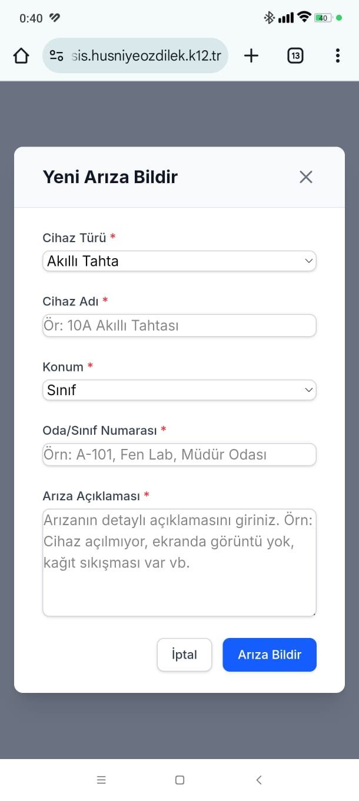
2.c. Arıza Kayıtlarını Görüntüleme
- Ana ekranda kendi oluşturduğunuz arıza kayıtlarını görebilirsiniz.
- Her arıza kaydının durumunu, oluşturulma tarihini ve detaylarını görebilirsiniz.
- Arıza kaydının yanındaki "Göz" ikonuna tıklayarak detayları görüntüleyebilirsiniz.
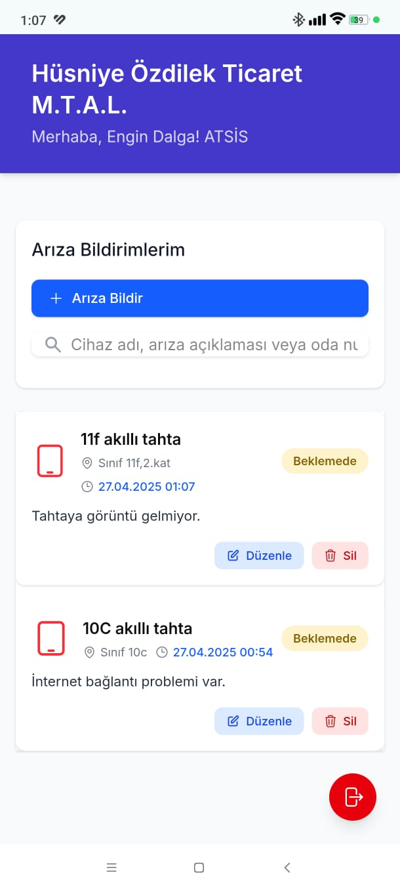
2.d. Profil Yönetimi
- "Çıkış Yap" seçeneği ile sistemden çıkış yapabilirsiniz.
3. Yönetici Paneli Kullanımı
3.a. Giriş Yapma
- Web tarayıcınızı açın ve ATSİS web adresine gidin.
- Daha önce yönetici hesabıyla giriş yapmışsanız, sistem sizi otomatik olarak tanıyacak ve doğrudan yönetici paneline yönlendirecektir.
- İlk kez giriş yapıyorsanız veya farklı bir hesapla giriş yapmak istiyorsanız, karşınıza gelen giriş ekranında e-posta adresinizi ve şifrenizi girin.
- "Giriş Yap" butonuna tıklayın.
- "Bu cihazda otomatik giriş yap" seçeneği varsayılan olarak işaretlidir. Bu sayede bir sonraki ziyaretinizde otomatik olarak giriş yapabilirsiniz.
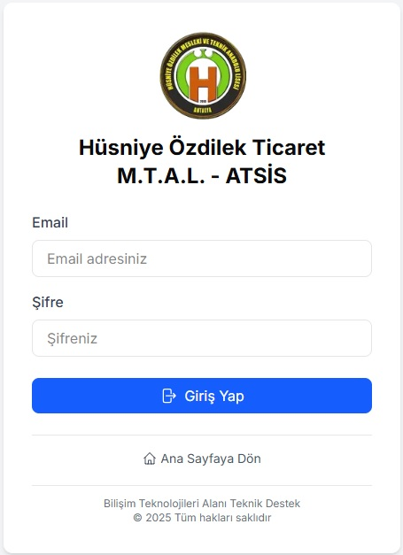
3.b. Genel Bakış (Dashboard)
Giriş yaptıktan sonra yönetici dashboard'u ile karşılaşacaksınız. Bu ekranda:
- Toplam arıza sayısı
- Açık arıza sayısı
- Çözülen arıza sayısı
- Son arıza bildirimleri
- Arıza durumlarını gösteren grafikler
gibi bilgiler yer alır.
Öğretmen Paneline Geçiş: Sağ üst köşede yer alan profil menüsünden "Öğretmen Moduna Geç" seçeneğine tıklayarak öğretmen arayüzüne geçiş yapabilirsiniz. Bu seçenek profil menüsünde "Profil" ve "Ayarlar" seçenekleri arasında yer almaktadır. Bu sayede öğretmenlerin sistemdeki deneyimini görebilir, test edebilir ve arıza bildirimlerini öğretmen bakış açısıyla inceleyebilirsiniz.
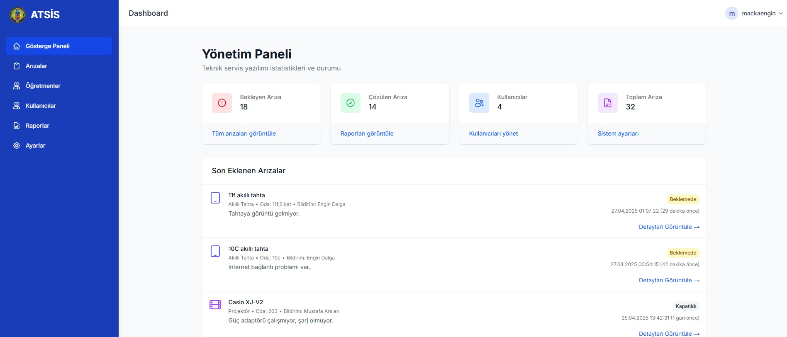
3.c. Arıza Kayıtları Yönetimi
- Sol menüden "Arızalar" sekmesine tıklayın.
- Bu ekranda tüm arıza kayıtlarını görebilirsiniz.
- Arama kutusu ve filtreler ile kayıtlar arasında arama yapabilirsiniz.
- Her arıza kaydının sağındaki düğmeler ile kayıtları görüntüleyebilir, düzenleyebilir veya silebilirsiniz.
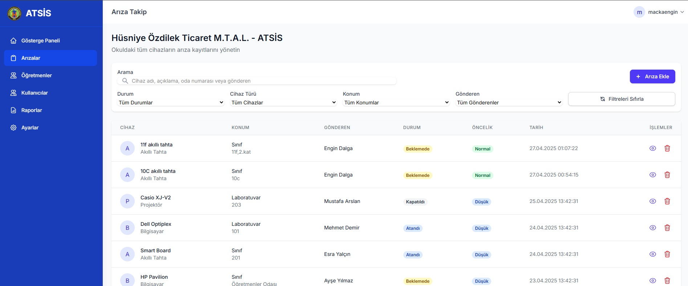
Arıza Kaydı Görüntüleme
- Görüntülemek istediğiniz arızanın yanındaki "Göz" ikonuna tıklayın.
- Açılan pencerede arıza ile ilgili tüm detayları görebilirsiniz.
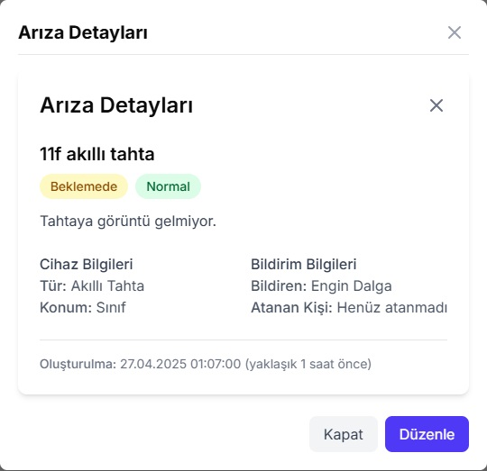
Arıza Kaydı Düzenleme
- Düzenlemek istediğiniz arızanın detay penceresinde "Düzenle" butonuna tıklayın.
- Açılan formda arıza bilgilerini güncelleyin.
- "Kaydet" butonuna tıklayarak değişiklikleri kaydedin.
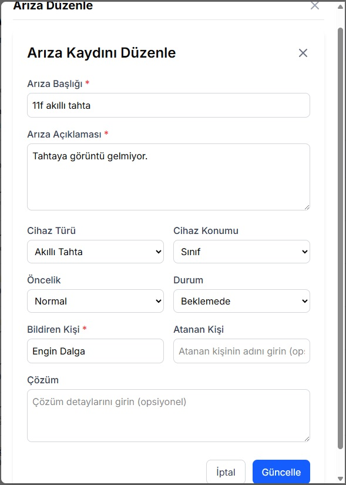
Yeni Arıza Kaydı Oluşturma
- Arızalar sayfasında "Arıza Ekle" butonuna tıklayın.
- Açılan formda gerekli bilgileri doldurun.
- "Kaydet" butonuna tıklayarak yeni arıza kaydını oluşturun.
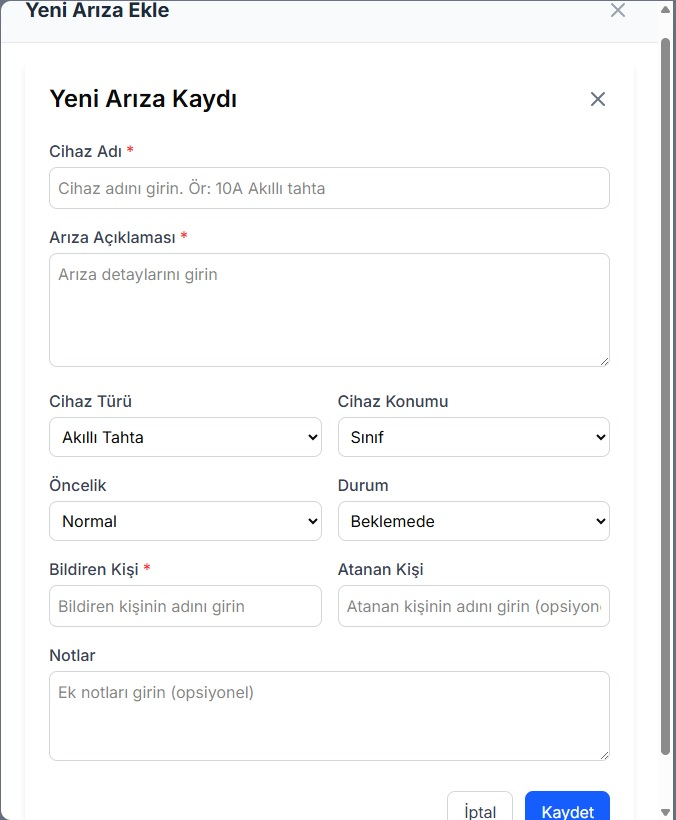
3.d. Kullanıcı Yönetimi
- Sol menüden "Kullanıcılar" sekmesine tıklayın.
- Bu ekranda tüm kullanıcıları görebilirsiniz.
- "Kullanıcı Ekle" butonu ile yeni kullanıcı ekleyebilirsiniz.
- Mevcut kullanıcıları düzenleyebilir veya silebilirsiniz.
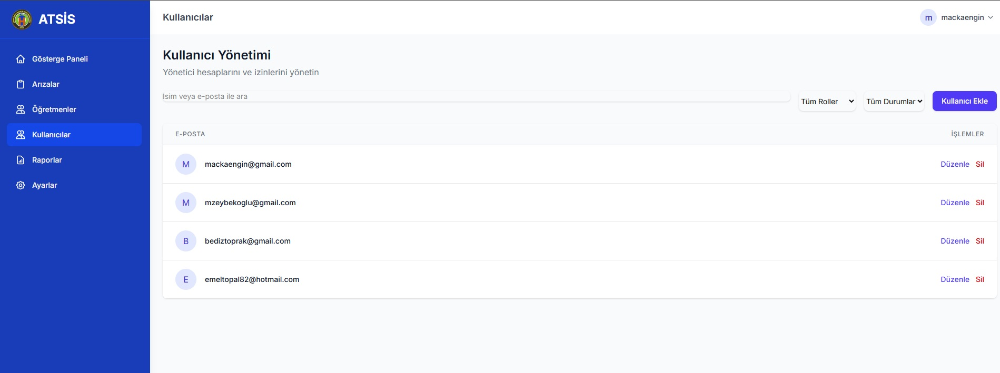
3.e. Raporlar
- Sol menüden "Raporlar" sekmesine tıklayın.
- Bu ekranda çeşitli raporları görebilirsiniz.
- Tarih aralığı seçerek filtreleme yapabilirsiniz.
- Raporları PDF olarak indirebilirsiniz.
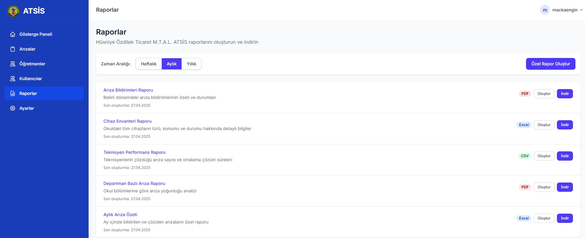
3.f. Ayarlar
- Sol menüden "Ayarlar" sekmesine tıklayın.
- Bu ekranda sistem ayarlarını yapabilirsiniz.
- Öğretmen erişim kodunu değiştirebilirsiniz.
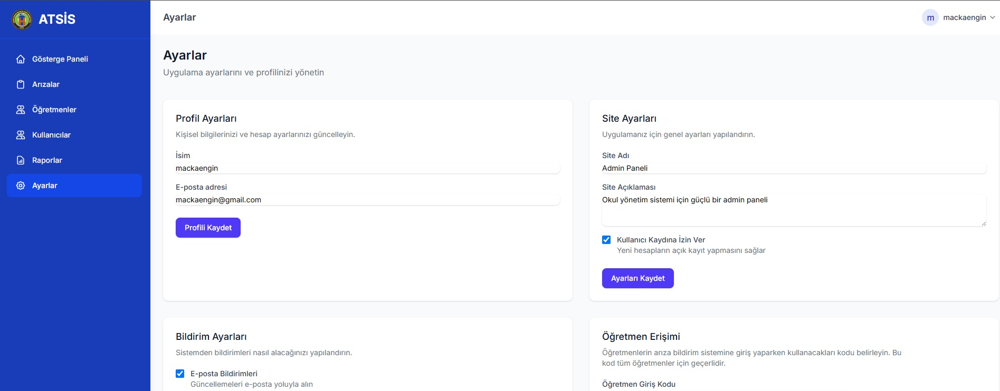
4. Gelecek Planları ve Geliştirmeler
ATSİS sürekli gelişmeye devam eden bir projedir. Gelecekte planladığımız yenilikler ve iyileştirmeler şunlardır:
4.a. Yapay Zeka Entegrasyonu
Yapay Zeka Destekli Arıza Tanılama ve Çözüm Önerileri
Gelecek güncellemelerimizde, ATSİS'e yapay zeka yetenekleri entegre edilecektir. Bu sayede:
- Otomatik Arıza Tanılama: Bildirimi yapılan arızaların tanımlarına göre otomatik kategorilendirme ve öncelik belirlemesi yapılabilecektir.
- Çözüm Önerileri: Benzer arızaların geçmiş çözüm yöntemlerini analiz ederek, teknik personele çözüm önerileri sunulacaktır.
- Arıza Tahmini: Cihazların arıza geçmişlerini analiz ederek potansiyel arızaların önceden tespit edilmesi ve önleyici bakım planlanması sağlanacaktır.
- Doğal Dil İşleme: Öğretmenlerin arıza tanımlarını analiz ederek daha detaylı teknik bilgiler çıkarılması sağlanacaktır.
- Akıllı Dağıtım: Yapay zeka algoritmaları kullanılarak, arızaların en uygun teknik personele otomatik atanması gerçekleştirilecektir.
Yapay zeka entegrasyonu sayesinde, arıza bildirimlerinin daha hızlı çözülmesi, tekrar eden sorunların önlenmesi ve sistem verimliliğinin artırılması hedeflenmektedir.
4.b. Mobil Uygulama
ATSİS için hem Android hem de iOS platformları için yerel mobil uygulamalar geliştirme çalışmalarımız devam etmektedir. Bu sayede:
- Bildirim oluşturmak için QR kod tarama özelliği
- Gerçek zamanlı bildirimler
- Arıza fotoğraflarını doğrudan çekip ekleyebilme
- Çevrimdışı modda çalışabilme yeteneği
özellikleri kullanıcılarımıza sunulacaktır.
4.c. Diğer Sistemlerle Entegrasyonlar
Okul yönetim sistemleri, envanter takip yazılımları ve e-okul gibi diğer sistemlerle entegrasyon sağlanarak, ATSİS'in daha kapsamlı bir okul yönetim ekosisteminin parçası haline getirilmesi planlanmaktadır.
Sonuç
Bu kılavuzda ATSİS'in temel kullanımı anlatılmıştır. Sistem kullanımı ile ilgili sorularınız için lütfen sistem yöneticinize başvurun.
Not: Ekran görüntüleri uygulamanın çalışır hali ile güncellenerek eklenecektir